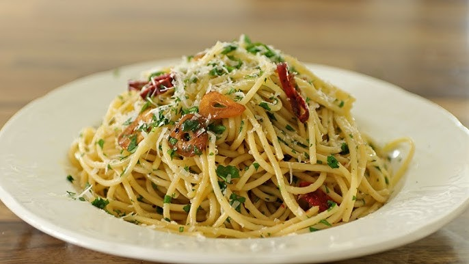

Home
Lasagna Recipe

Ingredients
- Spaghetti: 200g
- Garlic cloves: 3-4
- Butter or Olive oil: 50g
- Salt & Pepper
- Parmesan/li>
Instruction
- Boil:
Cook spaghetti in salted water.
-
Fry:
While pasta cooks, melt butter in a pan and fry garlic until golden.
-
Mix:
Toss cooked pasta into the pan with a splash of pasta water
-
Season:
Add salt, pepper, and cheese. Mix and serve.